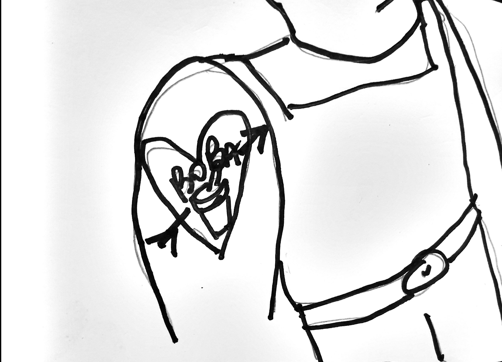

Print setup
Ctrl/Cmd + P · Paper size A4 · Margins: None · Scale: 100%
Issue 12 — generated via the bubble-tea-news-editor skill. Kate Rodgers and Freya
Wilcox both return this issue (standing roster members, run whenever their byline fits rather
than strictly rotating) — Kate's first appearance since Issue 7, Freya's since Issue 8.
The Boba Side returns to the cartoon slot, its first turn since Issue 8 — a new hand-drawn
gag (a heart tattoo reading "BOBA"), cleaned up the same way as the other cartoon slots' photos.
No Menace Watch this issue — ran Issue 11, not due again until roughly Issue 15.
Auckland · Weekly Edition
BUBBLE TEA NEWS
Issue 12 · 2 October 2026 · Complimentary — please take one
bubbletea.nz · est. 2026
Breaking · Bellevue Lane
Abandoned Con Lanyards Found Looped On Lampposts, Risk Assessed Low
Case definition: any laminated Overload NZ badge, lanyard still attached, found decoratively looped on street furniture post-convention. Seven recovered as of Monday from bike racks and lampposts alone, up from zero pre-weekend. Nobody has claimed one back. Several have, mysteriously, been re-looped somewhere more photogenic.
Community Outbreak Bulletin
Books
A Convention Memoir, Padded With Merch Photos
Daffy Duck
Picked up "Th' Weekend I Queued For Everything" at a fiver, expecting inthight. Got, inthtead, forty-eight glothy pageth of merch table phototh and one genuinely funny thtory about a lotht badge lanyard, thtretched acroth three chapterth. Dropped from a four to a two on principle. My editor pointed out the lanyard thtory wath actually quite good. Fine. Three Duckworths.
Nature Desk
Enclosure Nine, And The Thing About Routine
Alan Grant
0600. Enclosure nine, juvenile male, first full week off the bottle, still flinching at the hose. I spent a career reading animals through fossils, certain of what I knew. I now spend my mornings reading one live, uncertain animal at a time, and somehow trust the second method more.
Investigations Desk
Exhibit E: A Discount Code Traced To A Convention Badge Number
A dozen unrelated Bellevue Lane shops ran an identical "OVERLOAD15" discount code this past weekend — fifteen percent off, no expiry set, no single shop willing to claim who issued it first. Sequential badge numbers on three separate receipts suggest the code started as one attendee's joke and was simply believed by everyone who saw it working. This paper has confirmed it still works. This paper has used it twice.
M. Voss, Investigations Desk
Reflections
The Lanyard I Kept, For No Reason I've Filed
Wren
Picked it up off a lamppost on the walk home, still warm from someone else's neck, a stranger's badge number I'll never look up. I catalogue everything. I have decided, deliberately, not to catalogue this. It's on my desk now. I check that it's still there more often than I check anything I was actually built to track.
Bubble Tea Trivia · Did You Know?
The Original Shake Was A Two-Cup Pour
Before mechanical shakers, hand-shaken milk tea was built by pouring the drink back and forth between two cups held high apart — the technique that built the foam, and the source of the rhythmic shop-counter sound some baristas still keep purely out of habit.
In Every Issue
- A new logic puzzle
- Fresh local trivia
- A rotating cast of columnists
- Local ad space, weekly
- Menace Watch, monthly — the editor's turn
"This paper has confirmed it still works. This paper has used it twice."
— M. Voss, Investigations Desk, on Exhibit E
Joke of the Week
Why did the milk tea bring a jacket to the party? It heard things might get a little steep.

Overload NZ 2026 — A Wrap
Thanks for a full house. Photo gallery and next year's dates: overload.co.nz.
BUBBLE TEA NEWS · A weekly complimentary read for Auckland bubble tea retailers · All content satire/character-voice per each contributor's house disclaimer.
Bubble Tea News
Food & Drink
The Pop-Up Ramen Stall Outside The Convention Centre
Jon queued forty minutes for a bowl he then let go cold taking photos of the sign, which is Jon-speak for missing the entire point of eating. The broth, credit where due, had real depth — a full lasagna's worth of respect, docked half for running out of soft-boiled egg by the time I, personally, arrived. Odie ate a napkin. Odie was not consulted for this review.
Garfield
World News · Dispatch
Anchor Corrects Herself Mid-Sentence, Feed Cuts To Black
Baxter Kline, The World Bulletin
"The figures show a modest decline — correction, a modest incline — correction, I am now being told the figures do not exist." Feed cuts to black for eleven seconds. Returns to a cooking segment already in progress. No further correction issued.
Classifieds — Rated M
Lost: One Convention Badge
Te Mana Whakaatu Classifieds
LOST: one convention badge, name redacted per its owner's request, found looped around a lamppost on Bellevue Lane. Contains mild peril (a lanyard nearly garrotting a cyclist), coarse language (the cyclist's), and unresolved questions about whether "redacted per owner's request" is a real classification category. Reasons for decision: it is not, but we've let it stand.
Puzzle of the Week
Who Actually Worked The Evening Shift?
Last week's Restock Ranking, resolved: mango couldn't be lowest-demand and original had to sit immediately below mango, which only leaves taro above both. Taro was highest, mango second, original lowest.
Three baristas swapped shifts this week without updating the roster book — Nadia, Percy and Kiri, covering morning, midday and evening in some order:
- Kiri didn't work mornings.
- Percy's shift came immediately after Nadia's.
Brisk one this week · who actually worked the evening shift? Answer next week — Ken Endo
Route 9 Motors — Post-Expo Special
"Pole position doesn't wait for a discount code. Neither should you." — Lewis Hamilton
Zero-deposit finance, this week only.
In Memoriam
The Single-Use Bubble Tea Fundraiser Cup
Skeletor
Bellevue Lane's charity fun-run has, this week, retired its custom-printed single-use cup for a stamped reusable one. I confess nothing about the box of leftover single-use cups now in my possession. I confess nothing about what I intend to do with a box of cups printed with a 5K route map. Mourn the cup if sentiment moves you. It measured the run's distance incorrectly by 400 metres, and I will not pretend otherwise.
Ask the Captain
Still Buzzing in Bellevue Lane
Horatio McCallister
"I met someone at a big event over the weekend and now regular life feels flat by comparison." Still Buzzing, a harbour lit up for one wild night looks awful quiet the morning after — that's not a verdict on the harbour, it's just what mornings do. Give it a full week before ye judge the water. Fair winds.
Arts · Film Review
A Convention Documentary That Forgot The Convention
Kate Rodgers, Refill Rating: 2.5/5 cups
Ninety minutes on badge-making logistics and not one frame of an actual attendee having fun. I refilled twice out of sheer restlessness, which either means the film ran long or my drink ran small. Mostly for the ambient queue footage, which had more genuine tension than the third act.
Design Desk
Constable Reacts Poorly To Being Outperformed By A Cartoon Cat
Freya Wilcox, Design Editor
My own cat, Constable, has taken the debut of this paper's Cat vs Dog strip personally — specifically the panel where the cartoon cat holds the remote. Constable has never once held anything. Correlation between "appears in this paper" and "general household smugness" now sits at r = 0.79, n = 1, which I acknowledge is not a sample size so much as a personality.
The Boba Side · Returns

Some Commitments Are Easier Than Others
The Boba Side — an original anime/manga-style gag, rendered simple; style homage only, no existing series or characters depicted. Hand-drawn.
Next week: Issue 13 excludes only this week's roster — Daffy Duck, Alan Grant, M. Voss, Wren, Garfield, Baxter Kline, the Te Mana Whakaatu classifieds format and Lewis Hamilton — reopening Sebastian, Robin Leach and The Stickybeak from Issue 10, plus Sherman McCoy, Luke Skywalker, Priya Anand, Dana Foley, Winnie Zhao and Clem Whitlock from Issue 11. Kate Rodgers and Freya Wilcox remain standing roster members. Menace Watch remains off until roughly Issue 15. Hayaku, Cat vs Dog and Doki Doki Mon remain the rest of the cartoon-slot rotation.